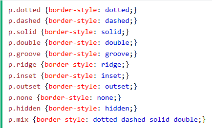
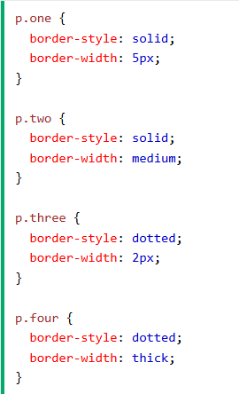

CSS-BORDERS
border-style: chỉ định loại viền của thẻ được hiển thị
bao gồm
-dotted- Xác định đường viền chấm bi
-dashed- Xác định đường viền đứt nét
-solid- Xác định đường viền liền
-double- Xác định đường viền kép
-groove- Xác định đường viền có rãnh 3D. Hiệu ứng phụ thuộc vào giá trị border-color
-ridge- Xác định đường viền có gờ 3D. Hiệu ứng phụ thuộc vào giá trị border-color
-inset- Xác định đường viền chèn 3D. Hiệu ứng phụ thuộc vào giá trị border-color
-outset- Xác định đường viền 3D. Hiệu ứng phụ thuộc vào giá trị border-color
-none- Không xác định đường viền
-hidden- Xác định đường viền ẩn
example:

-xác định từng loại cạnh viền-
-border-(right, top, bottom,left)-style : ...;
-border-style : (top) (right) (bottom) (left) ;
BORDER-WIDTH
border-width: xác định độ rộng của viền
example
BORDER-COLOR
border-color: chỉ định màu sắc của viền
5 loại định dạng màu:
tên : gọi ra tên màu đó (red)
mã HEX chỉ định giá trị HEX (#f0000)
mã RGB chỉ định giá trị RGB [rgb(255,0,0)]
mã HSL chỉ định giá trị HSL [hsl(0, 100%, 50%)]
transparent : viền trong suốt
có thể định dạng màu từng mặt viền
border-color : (top) (right) (bottom) (left) ;
shorthand
BORDER-RADIUS
-bo góc cạnh cho viền